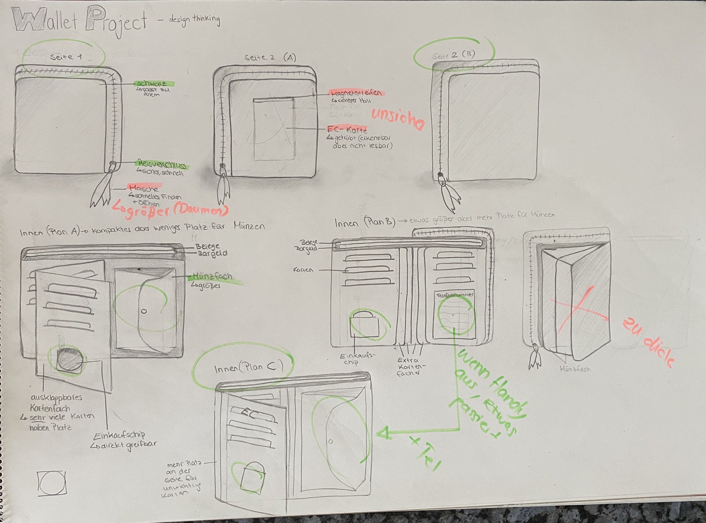

THE WALLET PPROJECT
Das optimale Produkt für eine kleine Zielgruppe
Overview
Person: Meine Mutter Sibylle
Zielgruppe: Frauen mittleren Alters, Eltern von erwachsenen Kindern, die oft Großeinkäufe machen, gestresst sind und sich nicht um das optimieren alltäglicher Gebrauchsgegenstände, wie einen neuen Geldbeutel, kümmern.
Geldbeutel: Momentan hat Sie einen kleinen no-name Geldbeutel indem kein extra Platz für Karten ist, deshalb liegen sie im Geldfach durcheinander. Dadurch kann man den Geldbeutel auch nicht richtig schließen.
Empathize
Interview
Wie betreffen dich die Kontakteinschränkungen aufgrund der aktuellen Situation?
Allgemein bin ich auf 60% auf der Arbeit heruntergeschraubt und mache viel Home Office. Das finde ich sehr angenehm, da ich nicht mehr im Stau stehen muss nach Stuttgart. Beim Einkaufen ist es natürlich schade Freunde zu treffen mit welchen man dann nicht richtig sprechen kann, sondern sich nur zwischen Tür und Angel sieht. Es ist schon eine andere Situation an die wir uns gewöhnen müssen.
Wo bist du besonders vorsichtig während deines Bezahlvorganges?
Ich versuche möglichst wenig Gegenstände anzufassen. Allerdings lässt sich bei mir das PIN eingeben beim Karte zahlen nicht vermeiden. Aber im Auto habe ich immer ein Desinfektionsmittel um danach meine Hände zu reinigen.
Wo befindet sich dein Geldbeutel immer? Und findest du ihn recht schnell?
Ohje! Nein, leider nicht. Da ich häufig die Taschen wechsle habe ich meinen ursprünglich etwas größeren Geldbeutel gegen einen kleinen Geldbeutel getauscht. Er hat ein Münz- und Scheinfach indem auch meine Karten mit drin sind. Leider finde ich ihn nicht schnell und oft ist auch das Münzfach schon offen und alles liegt in meiner Tasche herum.
Wie bezahlst du an der Kasse am Häufigsten? Bar, mit Karte oder mit sonstigen Zahlungsmöglichkeiten?
Momentan mit EC-Karte aber im Normalfall mit Bargeld.
Wie sieht dein Geldbeutel momentan aus? Bzw. welche haptischen Merkmale hat er?
Die haptischen Merkmale sind nicht gravierend. Ich muss deshalb immer in der Tasche krusteln bis ich ihn gefunden habe.
Ist dein Geldbeutel übersichtlich?
Nein. Definitiv nicht.
Stört dich etwas an deinem Geldbeutel bzw. was würdest du gerne ändern?
Ich hätte gerne eine optimalere Größe. Er darf aber auch nicht zu groß sein. Ein übersichtliches Fach für Karten, Scheine und Belege. Ein größeres Münzfach das sich besser verschließen lässt. Außerdem wäre es gut immer einen Einkaufschip bereit zu halten.
Was gefällt dir besonders gut an deinem Geldbeutel, dass vielleicht kein anderer hat?
Die Größe ist schon super aber für einen besser organisierten Geldbeutel muss man auch Kompromisse eingehen.
Define
Top Findings
- Wichtig: Viel Platz für Karten, momentan gibt es zu wenig Fächer und alle sind durcheinander in einem großen Fach
- Trotzdem wird eine kleine, handliche Geldbörse bevorzugt, die in jede Tasche passt
- Der Geldbeutel soll schneller auffindbar sein in größeren Taschen
- Ein großes Kleingeldfach, welches nicht schnell kaputt geht, denn ihr fällt immer das Kleingeld aus dem Geldbeutel
- Einfach zu verschließen (Reißverschluss)
- Extra Fach für Belege
- Einen Platz für Notfallnummern.
Ziele, Wünsche und Insights
Meine Mutter, als Nutzer,...
- ...benötigt ihre EC-Karte, um beim Einkaufen schnell bezahlen zu können, aber trotzdem Platz für Bargeld.
- ...benötigt ein sicheres und größeres Münzfach, um ihr ganzes Kleingeld zu verstauen.
- ...benötigt mehr Platz für Karten, um diese ordentlich zu verstauen und immer schnell zu finden.
- ...benötigt eine Masche am Geldbeutel-Zipper, um diesen schneller zu finden, aus der Tasche zu ziehen zu können und schnell zu öffnen.
- ...benötigt ein extra Fach für einen Einkaufschip, um immer einen parat zu haben.
- ...benötigt Platz für einen Zettel mit Telefonnummern, um im Notfall diese parat zu haben.
Ideate
Was muss die Geldbörse bieten?
- Eine Geldbörse, die sich komplett öffnet wenn man am Reißverschluss zieht
- Eine lange Masche/Anhänger am Reißverschluss, damit die Geldbörse schnell gefunden ist
- Ein extra Fach für den Einkaufschip
- Mehr Platz für verschiedene Karten
- Ein größeres Kleingeldfach
- Ein durchsichtiges Fach für einen Zettel mit wichtigen Telefonnummern
Prototype
Im nächsten Schritt habe ich meine Ideen weiterentwickelt und verschiedene Versionen des Prototypen gezeichnet, die ich mit meiner Mutter besprochen habe.
Test
Aspekte, die verbessert werden müssen
- Sie will keine Karte und keinen Einkaufschip ausserhalb des Geldbeutels. Er soll schlicht und schwarz von außen sein.
- Die Masche am Geldbeutel soll groß genug sein, dass ein Daumen hindurch passt
- Das Münzfach sollte nicht zu groß sein, sonst wird der Geldbeutel zu dick
Positives Feedback
- Der Enkaufschip innerhalb des Geldbeutels
- Die Telefonnummernliste auf einen Blick
- Die Fächerordnung für die Karten
- Die verschidenen Fächer für Bargeld und Belege
Prototype Iteration
Finales Feedback
Darf ich mir das zum Muttertag wünschen?